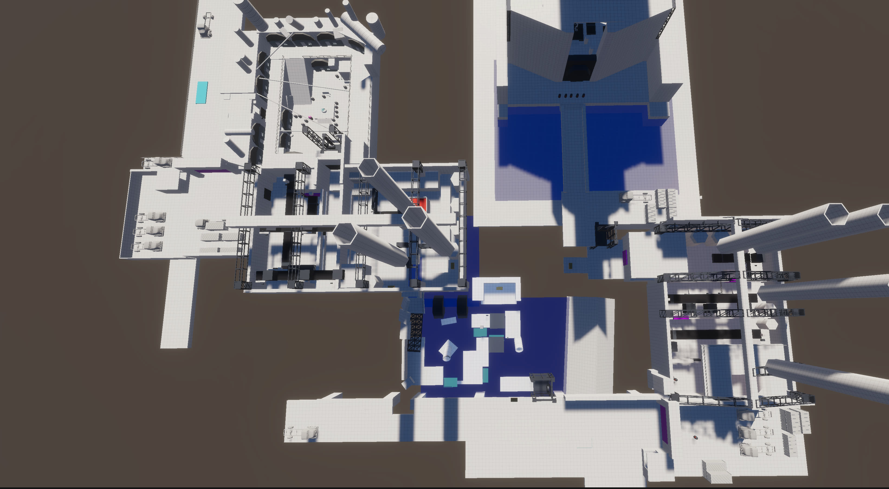
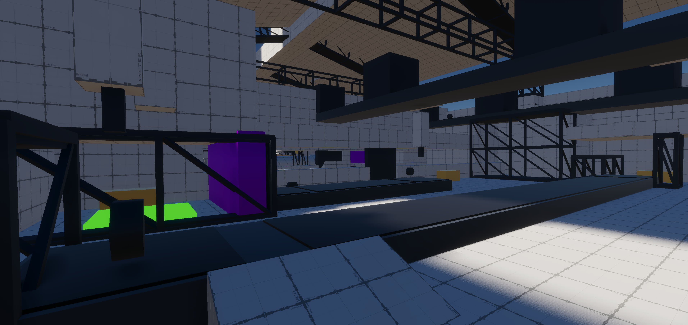
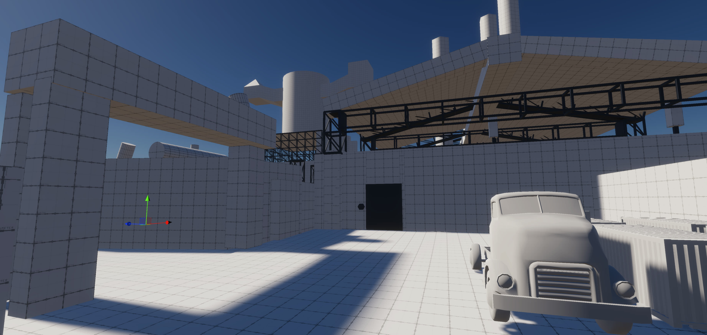
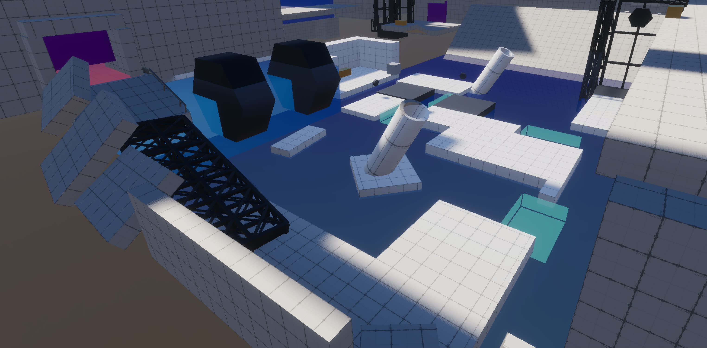
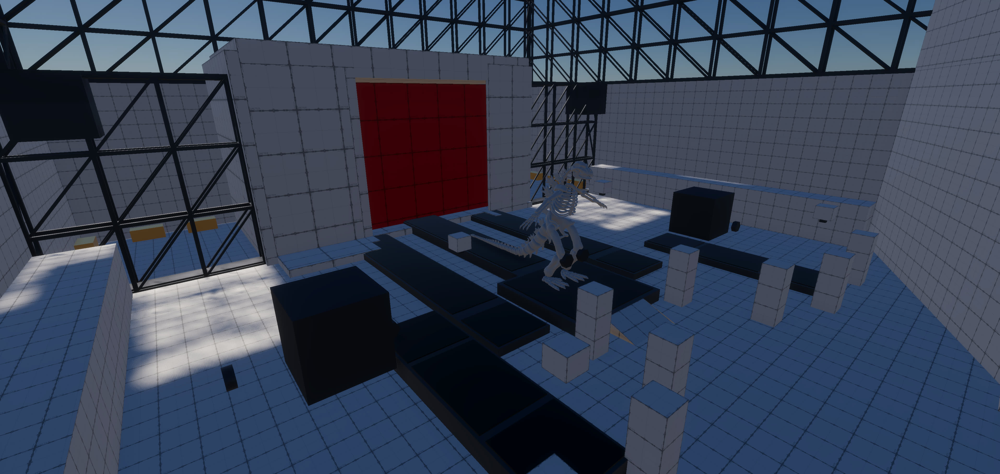

预期体验：在压迫流水线的工厂中，主角用冰块与工厂器械解密与战斗，解放族人。
《冰 × 工厂》是一个冰主题解谜游戏的 Unity 白盒 Demo。玩家扮演无法释放热量、只能「控制热量」生成冰块的燃族变异者，沿一条预设线性动线推进：从底层贫民区出发，穿过两座过载工厂、户外冰河，最终在 Boss 战中以一记超巨型冰块终结压迫者。

在压迫的流水线工厂中，主角用冰块与工厂器械解谜、战斗，解放被奴役的族人。一个以「冰」为绝对主角、纯策略不考验操作的线性解谜关卡白盒 Demo。
关卡白盒实机演示（Bilibili · BV1L6Ej6REjf）。若视频未加载，可点击上方「B站实机演示」前往观看。
预期体验：在压迫流水线的工厂中，主角用冰块与工厂器械解密与战斗，解放族人。
《冰 × 工厂》是一个冰主题解谜游戏的 Unity 白盒 Demo。玩家扮演无法释放热量、只能「控制热量」生成冰块的燃族变异者，沿一条预设线性动线推进：从底层贫民区出发，穿过两座过载工厂、户外冰河，最终在 Boss 战中以一记超巨型冰块终结压迫者。

本作为线性流程关卡。玩家沿一条预设动线推进，依次经历六个区段：
关卡规模 200m × 180m，玩家移动速度 5.35 米/秒。移速刻意放慢，原因有二：
玩家在身体前方生成一个冰块。同一时间只能存在一个冰块。
环境中的工业器械（传送带、门、锤打机等）都有热能状态，通过齿轮的颜色与转速表示：
| 档位 | 状态 | 齿轮颜色 | 效果 |
|---|---|---|---|
| 3 档 | 狂暴（过载） | 红色 | 转速最快，极致危险 |
| 2 档 | 正常 | 绿色 | 正常转速 |
| 1 档 | 冻结 | 冰蓝色 | 停止运转，一定时间后恢复至正常状态 |
各机关在不同档位下的表现一致：门（3 档疯狂开合 / 2 档正常 / 1 档停止）、锤打机（3 档快速锤打 / 2 档正常 / 1 档停止）、传送带（3 档高速 / 2 档正常 / 1 档停止）。
冰力档位决定冰块尺寸，吸热充能、冷却恢复：
| 冰力档位 | 冰块尺寸 | 恢复方式 |
|---|---|---|
| 0 档 | 无法生成 | 等 CD 自动恢复至 1 档 |
| 1 档 | 1×1 基础冰块 | CD 冷却后自动恢复 |
| 2 档 | 2×2 中型冰块 | 需主动吸热 |
| 3 档 | 3×3 巨型冰块 | 需主动吸热 |
| ???（决战） | 超巨型 | 吸取 Boss 大门热能，突破上限 |
关卡所有交互被拆解为 21 条原子规则，作为玩法可读性与组合解谜的基础：
项目以脑爆（Brainstorming）为起点，围绕「冰 × 工厂」核心主题发散：冰块能做什么？工厂里有什么可以和冰互动的器械？燃族在工厂中的生存状态？最终确定核心概念——主角的冰能力可以让工厂过载的设施恢复正常（这是主角存在的叙事理由），同时冰块本身的物理属性（滑动、碰撞、浮于水面）可作为解谜工具。
在脑爆基础上，采用三线协同产出法——玩法线、空间线、故事线三条设计线平行推进、互相喂养：
实际顺序：先从脑爆确定核心机制，再推进玩法线（规则、机关、解谜组合），然后搭建空间线（场景布局、动线规划），最后补充故事线（叙事节点、角色事件）。任意一条线只要有足够具体的产出，就能引导另外两条线产出。
受限于美术与空间搭建造诣，本项目将关卡空间分两类处理：关卡空间（有玩法）优先保证解谜可读性；过渡空间（无玩法）专门做空间置信度，让玩家感受到区域之间的环境变化。两者各自保底，而非强行高度融合。


在此基础上借鉴箱庭手法，加入局部空间回路与中心地标增强空间感：
已知问题：烟囱正面到侧面的角度跨度不够大，空间感建立有限。改进方向：让烟囱造型更具辨识度，使不同角度呈现明显不同的视觉特征。
核心叙事理由：主角的冰能力可以让工厂过载的设施恢复正常，这是主角在工厂中存在的价值。这一设定同时支撑了玩法——玩家冻结过载设备不是「破坏」而是「修复」，冻结效果是暂时的（设备会自然回温），与主角作为工厂维修者的身份一致。故事线产出的标志性时刻（小粉之死、逆行求援、复仇出发）驱动空间线规划关键场景节点。
第一关每一步只引入一个新概念，后面的解谜再把前面学过的概念组合起来：
生成冰块（冰可乐）→ 过载疯狂门 + 吸热冻结 → 冰让车失控 + 认识紫色可破坏物 → 再次冻结门 → 冻结传送带中途下车 → 冰块上传送带撞货解堵 → 锅炉堵塞爆破通关
第一关 → 第二关的策略升级：第一关教「冻结一切」，第二关引入锤打机并教「选择性冻结」——锤打机既是障碍又是工具，不能全冻，必须判断哪个方向对、哪个要留着。「该冻哪个」比「要不要冻」更难。
出生点有巨型可乐瓶雕像，小粉引导玩家在瓶口生成冰块放进去，可乐瓶升起，族人欢呼，可乐节日正式开始。
小粉带玩家从贫民区步行绕远路前往工厂，途中教玩家基本操作。
遇到一扇狂暴机械门，齿轮高速旋转发红（3 档过载）。小粉指引玩家对齿轮吸热 → 门冻结 → 通过。
地面有蓝色冰块，车辆因路面结冰失控打滑，撞坏封锁大门（紫色方块 = 可摧毁物体）。
再遇一扇门 → 冻结通过，巩固吸热冻结门的操作。
3 档狂暴传送带会把玩家送到终点 → 对传送带吸热冻结停转 → 中途自由下车。
前方门没反应，传送带上货物堵塞。结合车祸经验 → 生成冰块放上传送带 → 撞开货物 → 区域恢复通电 → 冻结门通过。
小粉修好设备回来，对话得知她在供能时被设备黏住，需回贫民窟叫人。
冻住沿途机关逆行解谜回贫民窟，叫到族人后通过捷径电梯返回。
赶回时小粉已化为灰烬。NPC 挡住退路，只能向前。
锅炉区域：上方传送带可送东西进锅炉，旁边有散热区，高处宝箱引导视线发现结构。冻住散热口齿轮 + 冰块经传送带送入锅炉 → 蒸汽爆炸 → 强化门炸开，第一据点通关。

走出第一据点，废墟区域。远处车辆指向下一目标。冰块放到水面 → 生成结冰通路 → 利用两侧机关依次通过。
等电梯上行，可俯瞰下方冰河场景，建立空间纵深感。
桥面公路上车流经过，第二工厂大门封锁 → 路面放冰块 → 车辆打滑失控 → 撞开大门。
敌人出现射击 → 冰块作冰盾挡子弹 + 消灭敌人（部分敌人已被车撞死）→ 冻结机关深入。
高处俯瞰流水线，大量敌人。从高处生成大冰块 → 斜坡滑下 → 保龄球式冲撞消灭敌人。可摧毁墙壁后有宝箱。
紫色墙壁 + 锤打机 + 传送带 → 冰块放上传送带 → 被锤打机横向击飞 → 撞碎墙壁，宝箱奖励。
直接放冰块会被错误方向的锤打机拦截 → 冻住错误方向的 → 保留正确方向的 → 冰块被正确击飞 → 墙破 → 冻住最后一个安全通过。
工厂警报触发，红白混闪。三面墙降下 → 锤打机方向对准墙壁 + 传送带匹配 → 冰块被击飞依次砸穿三面墙，第二据点通关。
回望冰河区域形成空间回环。电梯上行 → 看到中心建筑 + 巨大齿轮暗示 Boss。
桥梁被 Boss 炸断 → 冰块提示 → 冻结河面造出冰河大直道 → 冰盾顶着弹幕前进。

Boss 攻击 → 掩体躲避 → 冰块放传送带 → 锤打机击飞砸 Boss → Boss 眩晕 → 冻结 Boss 双脚齿轮 → 传送带拖 Boss 进锅炉。
冰盾挡 Boss 攻击 → 生成超巨型冰块 → QTE 推入锅炉口 → 锅炉爆炸 → Boss 消灭。
宝箱通关奖励 + 再来一杯冰可乐，首尾呼应冰可乐，完成叙事闭环。
白盒阶段的取舍同样是设计的一部分。如实记录被删除、未实现与简化的内容：
本作的设计并非一蹴而就。白盒从 2026/3/30 立项到 4/5 全流程跑通，核心机制、关卡流程与高光演出在持续迭代中不断收敛。以下罗列关键决策的演进路径、支撑这些决策的底层设计思路，以及制作中期的反思。
每条记录「改动前 → 改动后 + 原因」：
原因：黄色「次热」档在纯策略框架下没有独立价值——它最自然的用途是 timing 挑战，而本项目刻意压低操作维度。玩家的决策本质只在三态间选择：危险（红）、安全（绿）、锁死（蓝）。砍掉黄档让视觉语言更锐利、信息传达更高效。
原因：与热能档位同步收敛，减少玩家的资源管理负担，让档位之间的差异更聚焦、更易读。
原因：投掷不需要远程；修复齿轮玩法冗余；垫脚石因「冰块尺寸有限 + 无跳跃」会让动线规划变得混乱。砍掉后玩家动线完全由关卡物理空间（楼梯、电梯、传送带）决定，更可控。
原因：跳跃天然带 timing 与精度要求，会把策略解谜变成平台跳跃。删除后衍生出 R17——只有传送带旁有斜坡时玩家才能上去，让设计者能精确控制「哪些传送带玩家能坐、哪些不能」，与「不考验操作」原则完全一致。
原因：增加戏剧张力——Boss 进炉后并未死亡，疯狂射击，玩家需顶着弹幕堵口。最后一刻的反击让通关更有「封印」的仪式感；节奏上「先动脑后动手」，但动手依然不考验操作。
原因：与「冰」的主题绑定更强——路本身就是冰造的，是冰之力的证明，而非工业通道。左右逐段塌陷、只能向前的演出渲染「一往无前的勇气」，呼应主角的复仇决心。
原因：随玩法做减法与 Boss 战、第二关玩法成型，规则集重构：删除垫脚相关规则，新增 R14（冻住生物体肢体）、R17（斜坡准入）、R18 / R19（滑冰破障）、R20（锤打机击飞）、R21（回温）。规则数增加，是因为更精确地拆分了「冰的物理运动」这一类玩法。
之所以能这样大幅删改而不伤筋动骨，靠的是两条贯穿始终的方法：
热能档位在系统中扮演触发器 / 中间层，把输入端与输出端解耦：
扩展时不需要发明新机制，只需替换输入或输出的任意一侧。砍掉黄档之所以「成本很低、未来想加回来也容易」，正是因为这套解耦架构——这也是「锤打机不是新机关，只是门换了输出端」的底层依据。
策略深度不靠堆数值，而来自规则之间的矛盾。这套张力分析也是判断「该保留 / 该删除哪个机制」的标尺：
中期最大的教训是太注重程序实现，浪费时间在脚本细节上。典型案例：第一关结尾原设计了「起伏传送带 + 冻结 + 冰块滑下」的解谜，但自制 PCG 工具配置出问题导致无法实现，最终花了太久才决定舍弃，简化为「放冰块 + 冻住一处」。
教训：白盒阶段「能跑就行」，遇到实现困难应快速简化设计，不要死磕程序。这个简化决定是对的，但应该更早做出。
本项目用 Gemini / Claude 辅助发散与整理，但作者多次「复查修正」把 AI 总结拉回原始创意。例如：
思路：AIGC 是发散和整理的工具，但所有采纳与表述的最终决策权始终在设计者本人。
以下是制作中产生的设计直觉，尚未执行，作为后续迭代的思考方向记录：
现状：玩家「吸热」就能让齿轮降档，但这跟「冰」的主题绑定不够强——更像抽象的按键交互。方向：吸热仍可获取冰力值，但不直接降档；要让齿轮降温，必须把冰块放到旁边，用冰块的物理存在去降温。这样「冰」才是真正的核心动词——不是「吸」而是「放冰」。（较大机制改动，待白盒搭完后统一评估。）
现状：1 档冰与 3 档冰在游玩中差别不大。方向：给每个等级找不可替代的用途——燃烧炉需 2 档以上才塞得进；冰河结冰范围随等级变化（1 档小范围、3 档大范围），逼玩家权衡「我需要多大的冰面才能过去」，从而决定攒到几档再放。
| 工具 | 用途 | 性质 |
|---|---|---|
| Gemini | 项目早期脑爆阶段的发散对话伙伴，围绕「冰」「工业」两个主题词发散素材 | 辅助发散，所有采纳决策由本人判断筛选 |
| Nano Banana | 定义性场景的视觉化图表制作 | 可视化工具 |
| Claude | 设计文档的结构化整理（将本人的设计笔记与对话记录梳理为结构化文档） | 文档整理工具，内容由本人审核修正 |
| Codex | 白盒阶段的程序脚本实现（Vibe Coding） | 代码实现工具 |
AIGC 直接生成内容标注：Gemini 在脑爆中补充了「管道与阀门」「高压蒸汽喷射」「熔炉与铁水」等工业场景素材，经本人筛选后影响了世界观氛围构思，但未直接引用原文；Claude 辅助了笔记的结构化整理，但所有内容经本人审核、修正并重写，最终表述为本人定稿。